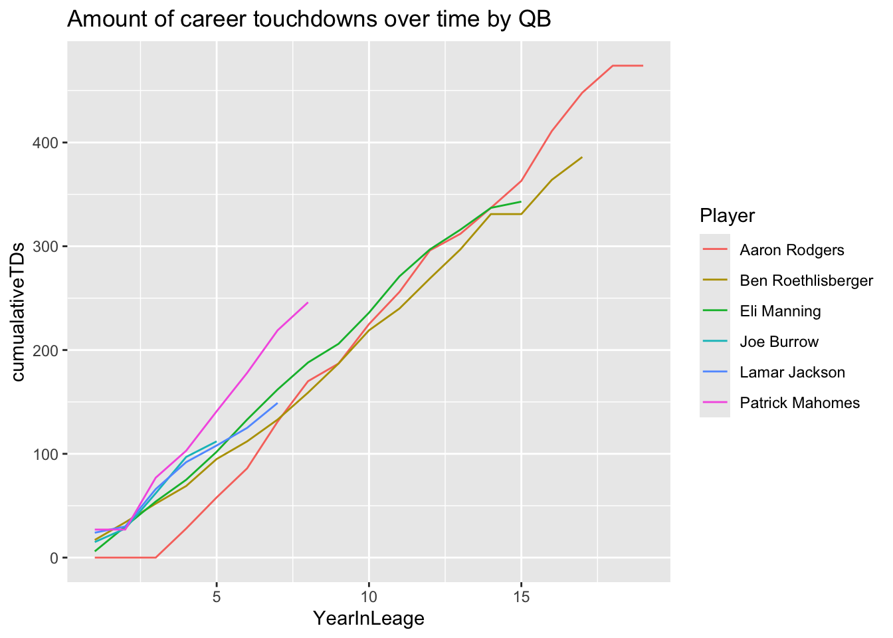

# Load the purr package along with other tidyverse packages
if(!require("tidyverse")) {install.packages("tidyverse"); library("tidyverse")}Vignette for Purrr
Introduction
The purrr package provides functions that eliminate the need for many common for loops. They are more consistent and thus easier to learn than many of the alternative functions in the base R package. It allows you to generalize a solution to every element in a list. It also allows you get lots of small pieces and compose them together with the pipe.
Map Functions
The purr package provides functions that allows you to loop over a vector, do something to each element, and save the results
map()makes a list.map_lgl()makes a logical vector.map_int()makes an integer vector.map_dbl()makes a double vector.map_chr()makes a character vector.
The map functions make it easier to write and to read than for loops.
We will import a dataset from Kaggle that contains information about NFL passing statistics from players since 2001.
# Lets import the passing_cleaned csv
passing_stats <- read.csv("passing_cleaned.csv")
passing_stats <- as_tibble(passing_stats)
# Lets extract the variables Age, G, Yds, TD, Cmp, Int, Rate
passing_stats <- passing_stats |>
select(Age, G, Yds, TD, Cmp, Int, Rate) |>
arrange(desc(Yds))
passing_stats# A tibble: 2,350 × 7
Age G Yds TD Cmp Int Rate
<int> <int> <int> <int> <int> <int> <dbl>
1 37 16 5477 55 450 10 115.
2 32 16 5476 46 468 14 111.
3 44 17 5316 43 485 12 102.
4 27 17 5250 41 435 12 105.
5 34 16 5235 39 401 12 106.
6 37 16 5208 37 471 15 102.
7 33 16 5177 43 422 19 96.3
8 34 16 5162 39 446 12 105.
9 36 16 5129 34 452 16 96.5
10 25 16 5109 33 380 30 84.3
# ℹ 2,340 more rowsImagine if we wanted to compute the mean, median and sd for every column. We can use the map function to do this. Since they will generate doubles we need to us map_dbl().
# Compute mean for every column
passing_stats_mean <- passing_stats |>
map_dbl(mean, na.rm = TRUE)
# Compute median for every column
passing_stats_median <- passing_stats |>
map_dbl(median, na.rm = TRUE)
# Compute sd for every column
passing_stats_sd <- passing_stats |>
map_dbl(sd, na.rm = TRUE)
passing_stats_mean Age G Yds TD Cmp Int
28.131489 10.342979 1204.897021 7.322979 106.064681 4.600426
Rate
77.791830 passing_stats_median Age G Yds TD Cmp Int Rate
27.00 12.00 295.00 1.00 27.00 2.00 80.05 passing_stats_sd Age G Yds TD Cmp Int
4.356133 5.632477 1532.527920 10.252285 133.591048 5.672478
Rate
31.949639 As you can see the map function allowed us to apply some solution to an entire data-frame in one command!
Extend - Semyon Toybis
I am interested in comparing the amount of total career touchdowns over the course of the careers of some notable quarterbacks.
I start by reading in the original file to have the player names and create a vector of quarterbacks that I am interested in comparing. I subset the original data frame for the QBs I am interested in.
statsWithNames <- read.csv("passing_cleaned.csv")
qbsOfInterest <- c('Eli Manning', 'Ben Roethlisberger', 'Aaron Rodgers', 'Joe Burrow', 'Lamar Jackson', 'Patrick Mahomes')
statsFiltered <- subset(statsWithNames, Player %in% qbsOfInterest)
head(statsFiltered, n=10) X Player Age G GS Cmp Att Cmp. Yds TD TD. Int Int. X1D Lng
357 363 Ben Roethlisberger 22 14 13 196 295 66.4 2621 17 5.8 11 3.7 130 58
371 377 Eli Manning 23 9 7 95 197 48.2 1043 6 3.0 9 4.6 50 52
455 463 Eli Manning 24 16 16 294 557 52.8 3762 24 4.3 17 3.1 176 78
471 479 Ben Roethlisberger 23 12 12 168 268 62.7 2385 17 6.3 9 3.4 110 85
520 529 Aaron Rodgers 22 3 0 9 16 56.3 65 0 0.0 1 6.3 3 16
556 566 Ben Roethlisberger 24 15 15 280 469 59.7 3513 18 3.8 23 4.9 178 67
559 569 Eli Manning 25 16 16 301 522 57.7 3244 24 4.6 18 3.4 162 55
610 621 Aaron Rodgers 23 2 0 6 15 40.0 46 0 0.0 0 0.0 2 16
652 664 Patrick Mahomes 28 16 16 401 597 67.2 4183 27 4.5 14 2.3 206 67
661 673 Lamar Jackson 26 16 16 307 457 67.2 3678 24 5.3 7 1.5 167 80
Y.A AY.A Y.C Y.G Rate Sk Yds.s Sk. NY.A ANY.A Year
357 8.9 8.4 13.4 187.2 98.1 30 213 9.2 7.41 6.93 2004
371 5.3 3.8 11.0 115.9 55.4 13 83 6.2 4.57 3.21 2004
455 6.8 6.2 12.8 235.1 75.9 28 184 4.8 6.12 5.63 2005
471 8.9 8.7 14.2 198.8 98.6 23 129 7.9 7.75 7.53 2005
520 4.1 1.3 7.2 21.7 39.8 3 28 15.8 1.95 -0.42 2005
556 7.5 6.1 12.5 234.2 75.4 46 280 8.9 6.28 4.97 2006
559 6.2 5.6 10.8 202.8 77.0 25 186 4.6 5.59 4.99 2006
610 3.1 3.1 7.7 23.0 48.2 3 18 16.7 1.56 1.56 2006
652 7.0 6.9 10.4 261.4 92.6 27 186 4.3 6.41 6.26 2007
661 8.0 8.4 12.0 229.9 102.7 37 218 7.5 7.00 7.34 2007Next, I create a new data frame that has the names of the players, their year in the league, and the TDs for that year. In that new data frame, I create a column that has the cumulative sum of TDs for each player. I then sort the data frame by Player and Year, group by player, and add a column that has the year in the league for the player, which is the row number. This allows us to analyze how many TDs each QB had in their first, second, third, etc. year in the league. I used the Dplyr functions ‘select’, ‘group_by’, and ‘mutate’.
cumulativeTDs <- statsFiltered |> select(Player, TD, Year) |> group_by(Player) |>
mutate(cumualativeTDs = cumsum(TD))
cumulativeTDs <- cumulativeTDs |> arrange(Player, Year) |>
group_by(Player) |> mutate(YearInLeage = row_number())
head(cumulativeTDs, n = 10)# A tibble: 10 × 5
# Groups: Player [1]
Player TD Year cumualativeTDs YearInLeage
<chr> <int> <int> <int> <int>
1 Aaron Rodgers 0 2005 0 1
2 Aaron Rodgers 0 2006 0 2
3 Aaron Rodgers 0 2007 0 3
4 Aaron Rodgers 28 2008 28 4
5 Aaron Rodgers 30 2009 58 5
6 Aaron Rodgers 28 2010 86 6
7 Aaron Rodgers 45 2011 131 7
8 Aaron Rodgers 39 2012 170 8
9 Aaron Rodgers 17 2013 187 9
10 Aaron Rodgers 38 2014 225 10Below I visualize the cumulative TDs over time by player. I use the ggplot2 package.
cumulativeTDs |> ggplot(aes(x = YearInLeage, y = cumualativeTDs, color = Player)) + geom_line() + ggtitle('Amount of career touchdowns over time by QB')
Interestingly, Patrick Mahomes is by far ahead of the other QBs for total career touch downs at this point in his career. Aaron Rodgers, who has the most TDs of the group interestingly spent a few years in the league before he recorded his first TD (those familiar with the NFL will know it was because he was a backup for Brett Favre and didn’t play his first few years). It would be interesting to include QBs like Peyton Manning and Tom Brady in this analysis, but their careers started before 2001 so the data set does not fully capture their careers.